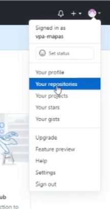
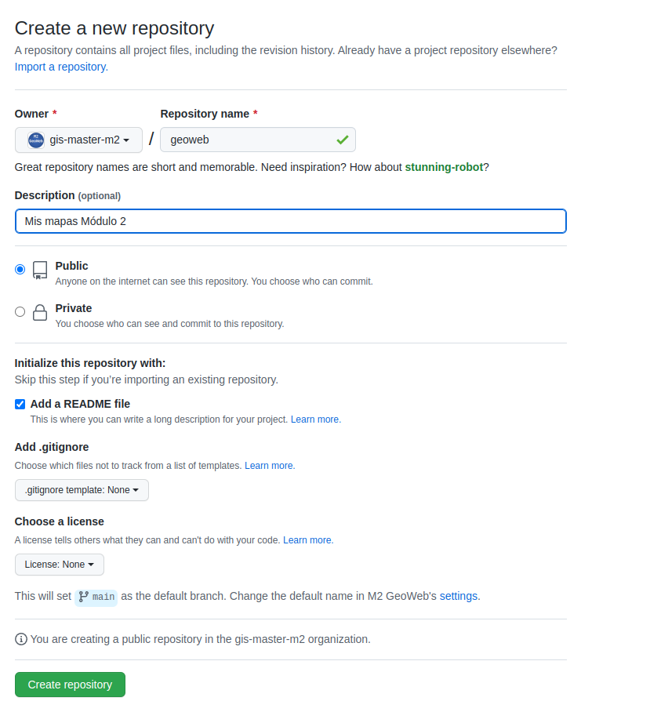
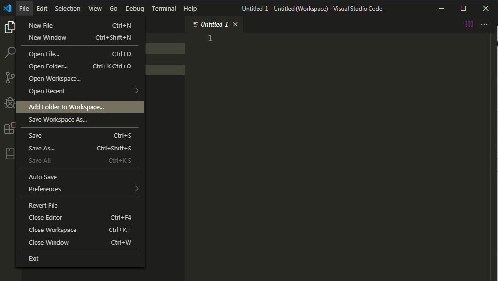
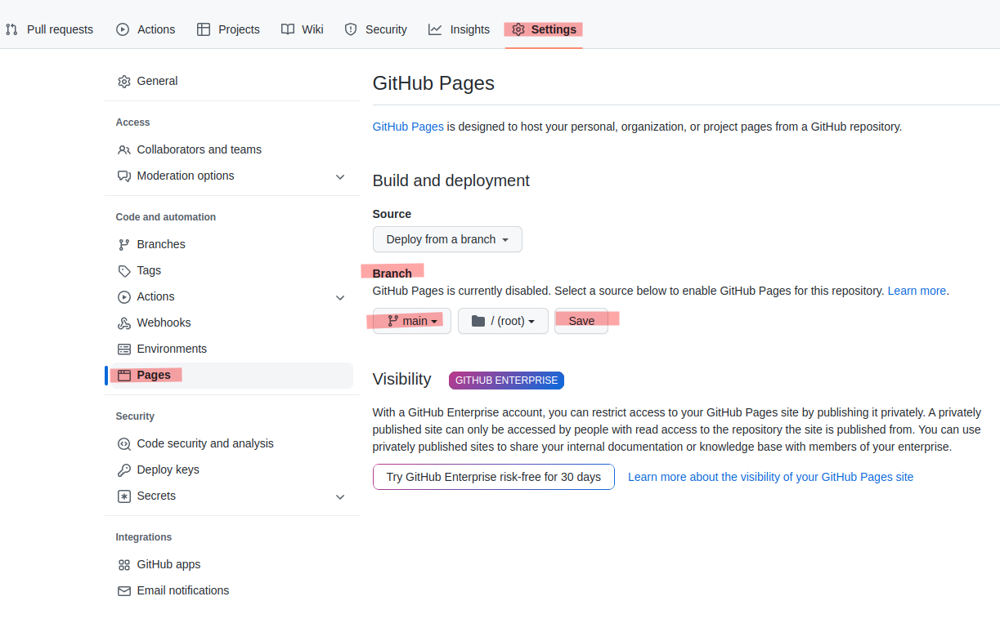
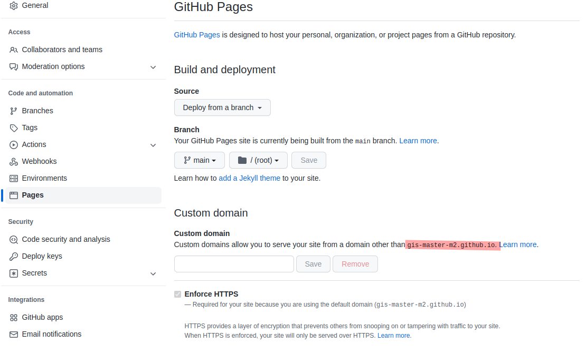

3. Mi primer proyecto en GitHub
Descripción
Vamos a crear un proyecto en GitHub dónde vamos a subir todo nuestros ejemplos de módulo asó como las prácticas Utlizaremos VisualStudio Code cómo editor web y también para , mediante órdenes GIT mantener nuestro repositorio
Paso 1 - Crear usuario en GitHub
- Crear usuario en: https://github.com/
Atencion!!
El nombre de usuario debe ser único y NO debe tener espacios ni accentos y será el subdominio de nuestras páginas web. Así por ejemplo podrías crear un usuario tipo vuestras iniciales más palabra descriptiva - ejemplo: vpa_mapas o vpa_modulo2b-

NOTA: Para más información ver VIDEO 2
Paso 2 - Crear repositorio
- Una vez validado nuestro correo y creado el usuario, vamos al avatar de la parte superior-derecha y seleccionamos Your repositories

-
Nos mostrará que no tenemos repositorios y le damos al botón New
-
Creamos nuevo repo llamado geoweb

NOTA: Para más información ver VIDEO 2
Paso 3 - Clonar proyecto en nuestro ordenador
- Vamos al botón verde "Code" seleccionamos HTTPS y copiamos la URL del proyecto

-
Vamos a nuestro ordenador y nos situamos en el directorio dónde vamos a trabajar, por ejemplo c:/MasterUPC/m2/
-
Botón derecho del mouse -->"Git Bash Here" y escribo en la consola
git cloney pego la URL + Enter

git clone https://github.com/{tu usuario git}/geoweb.git
Note
Si no aparece "Git Bash Here", tienes que instalar el cliente GIT https://git-scm.com/download/win
NOTA: Para más información ver VIDEO 3
Paso 4 -Añadir proyecto a VSCode
- Abrimos VSCode y añadimos directorio geoweb File -->Add folder to workspace

Paso 5 - Creamos página html
-
Situamos puntero encima de geoweb botón derecho del mouse --> "New File" y creamos index.html
-
Copiamos el siguiente código HTML de la que será nuestra página de inicio
<html>
<head>
<title>Mis mapas M2B</title>
<meta charset="utf-8" />
<meta name="viewport" content="width=device-width, initial-scale=1.0">
<meta name="author" content="autor" />
<meta name="description" content="descripción página">
<meta name="robots" content="index,follow">
</head>
<body>
<h2>Mis mapas del módulo M2B</h2>
<h4>Leaflet</h4>
<ul>
<li></li>
<li></li>
<li></li>
</ul>
<hr />
<h4>MapBoxGL JS</h4>
<ul>
<li></li>
<li></li>
<li></li>
</ul>
<hr />
<h4>KeplerGL</h4>
<ul>
<li></li>
<li></li>
<li></li>
</ul>
<hr />
<h4>Prácticas</h4>
<ul>
<li></li>
<li></li>
<li></li>
</ul>
<hr />
</body>
</html>
Guardamos archivo crtl + s
Paso 6 - Visualizamos archivo
Para visualizar un archivo HTML No es recomendable hacerlo cómo si fuera un archivo local file://, es decir "doble-click" sobre el archivo, ya que podria contener código JavaScript que que no se ejecutara correctamente (por ejemplo todo aquello a cargar contenido a paritr de rutas relativas a un recurso web). Es mejor visualizar archivos HTML via http://. Para ello instalaremos una extensión de VSCode llamada LiveServer
Si utlizamos VSCODE , instalamos extensión Live Server View -->Extensions

Paso 7 .Subir cambios a GitHub
- Abrimos una terminal en VSCode View --> Terminal y dentro de la terminal escribimos (linea + tecla Enter)

git pull
git add .
git commit -m "change readme"
git push -u origin main
Si al hacer commit la primera vez tenemos este aviso
Run
git config --global user.email "you@example.com"
git config --global user.name "Your Name"
to set your account's default identity.
Omit --global to set the identity only in this repository.
fatal: unable to auto-detect email address (got 'usuario@yourpc.(none)')
Entramos nuestor usuario de git y volvemos a hacer push
git config --global user.email micorreo@gmail.com
git config --global user.name misusuario
git pull
git add .
git commit -m "change readme"
git push -u origin main
La primera vez puede ser que tengamos que autentificarnos en GitHub

Al final cada vez que subamos cambios debemos escribir estas 4 lineas
git pull
git add .
git commit -m "mensaje commit"
git push origin main
Note
Cada vez que editamos debemos hacer esta operación para subir código
NOTA: Para más información ver VIDEO 4
Paso 8 -GitHub como webhosting
- Para convertir el repo en una página web, vamos al proyecto geoweb en github.com
- Seleccionamos opción Settings
- GitHub Pages -->Source opción Branch main -->Save  
NOTA: Para más información ver VIDEO 4
Paso 9 -Práctica no puntuable con GitHub
Editar index.html
La pagina index.html no tiene estilo. ¿Podriás añadir css y divs para maquetar mejor la pàgina. Puedes utlizar librerías com Bootstrap o Materialize para un mejor diseño
pista
Recuerda que al final cada vez que subamos cambios debemos escribir estas 4 lineas
git pull
git add .
git commit -m "mensaje commit"
git push origin main
Anexos
Para recuperar (clonar) nuestro trabajo en otro pc, por ejemplo
Nos situamos en un directorio de nuestor PC. Botón derecho del mouse -->"Git bash here"
Note
Si no aparece "Git bash here", tienes que instalar el cliente GIT https://git-scm.com/download/win
Para (clonar) clonar la doumentación del curso
Nos situamos en un directorio de nuestor PC. Botón derecho del mouse -->"Git bash here"
git clone https://github.com/gis-master-m2/m2-geoweb.git
Para actualizar-sincronizar documentacion
Nos situamos dentro del directorio del proyecto, por ejemplo geoweb o m2-geoweb. Botón derecho del mouse -->"Git bash here"
git pull
Para crear un proyecto desde nuestro PC directament a Github
-
Crearemos repo des de nuestro pc Tutorial
-
Nos situamos dentro del directorio geoweb de nuestro servidor y abrimos termial git (botón derecho mouse y Git Bash here)
git init
git add .
git commit -m "proyecto geoweb"
git remote add origin https://github.com/{tu usuario git}/geoweb.git
git remote -v
git push -u origin main